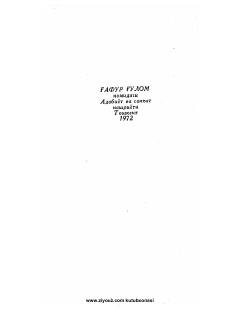

A3Maqsud Shayxzodaning olti jildlik asarlar to'plamidan o'rin olgan uchinchi jild — pyesalar to'plami.
Ushbu kitob taniqli o'zbek shoiri va dramaturgi Maqsud Shayxzodaning olti jildlik asarlar to'plamining uchinchi jildi hisoblanadi. Mazkur jild muallifning dramatik asarlari, xususan, pyesalarini o'z ichiga olgan.